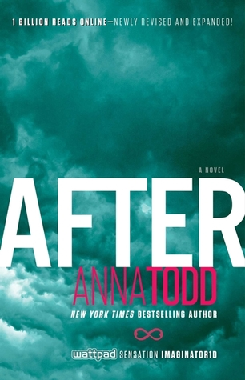

Az én kedvenc könyvem
Miután
Tessa igazi jó kislány. Egy rendes fiúval jár már évek óta, vannak tervei, ambíciói, és az anyja ügyel rá, hogy az élete a megfelelő irányban haladjon tovább. Aztán elsőévesként beköltözik az egyetem kollégiumába, és találkozik Hardinnal. Azonnal feltűnik neki a tetovált, piercinges fiú, aki angol akcentussal beszél, és mindenben különbözik attól, amit Tessa az addigi életében megszokott. Hardin rendkívül mogorva, sőt kifejezetten ellenséges vele, és a viselkedése miatt Tessának gyűlölnie kéne őt. Gyűlöli is, amíg egy este egyedül nem maradnak a fiú szobájában. Tessát megragadja a fiú sötét személyisége, és amikor megcsókolják egymást, olyan szenvedély támad fel benne, amilyet még sohasem tapasztalt.
